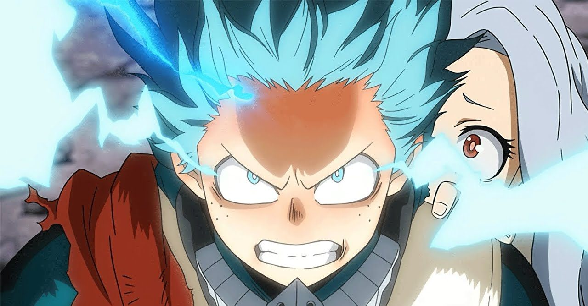

.: Izuku Midoriya :.
Izuku Midoriya (緑みどり谷や出いず久く Midoriya Izuku?), also known as Deku (デク Deku?), is the main protagonist of the My
Hero Academia manga and anime series.

Even though Izuku was born Quirkless, he manages to catch the attention of the legendary hero All Might due to
his innate heroism and a strong sense of justice, and has since become his close pupil, as well as a student in
Class 1-A at U.A. High School. All Might passed on his transferable Quirk to Izuku, making him the ninth holder
of One For All.
Following the Paranormal Liberation War, with Tomura Shigaraki and All For One actively targeting Izuku for his
Quirk, he decided to leave U.A. before finishing his first year to keep his assmates out of harm's way. He is
still continuing to fight villains
Powers and abilities
- Unknown Quirk: The Quirk of the second user. The name and abilities of this Quirk have not yet been
revealed.
- Fa Jin (発はっ勁けい Hakkei?):The Quirk of the third user. This Quirk allows Izuku to build up and store
kinetic energy as he moves. He can later release this stored energy as an explosive burst of speed and
power.
- Danger Sense (危き機き感かん知ち Kiki kanchi?): The Quirk of the fourth user, Hikage Shinomori. This Quirk
allows Izuku to detect threats in the surrounding area. The detection causes a stabbing sensation in his
head and it takes a toll on his body.
- Blackwhip (黒鞭クロムチ Kuro Muchi?): The Quirk of the fifth user, Daigoro Banjo. This Quirk allows Izuku
to generate tendrils of black energy from his body that are good for grappling. It is useful for grabbing
things from long distances, as well as increasing Izuku's mobility.
- Smokescreen (煙えん幕まく Enmaku?): The Quirk of the sixth user, En. This Quirk allows Izuku to generate a
thick cloud of smoke. This smoke can cover a very wide area and obscure peoples' vision.
- Float (浮ふ遊ゆう Fuyū?): The Quirk of the seventh user, Nana Shimura. This Quirk allows Izuku to suspend himself
in mid-air.
Leia mais